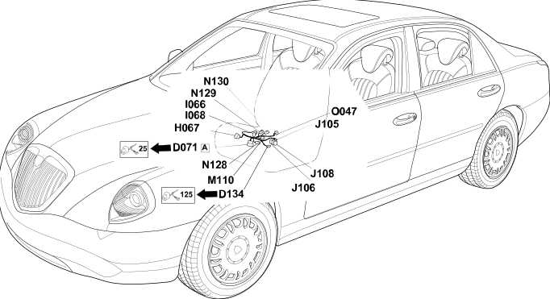

37 right seat
- Path
- Electrical equipment > Wiring > 37 right seat
- Kind
- wiring harness
- Applies to
- all engines; all production periods
- Interactive page
- https://sloeber94.github.io/elrnDB-lThss/en/#/207372
Applies to: all engines; all production periods

Topics that link to this page (13)
- D071A Passenger seat coupling(REAR)
- D134 Right front backrest cushion coupling(RIGHT SEAT)
- H067 Passenger seat movement controls(RIGHT SEAT)
- I066 Passenger seat heating switch(RIGHT SEAT)
- I068 Passenger lumbar adjustment switch(RIGHT SEAT)
- J105 Right front seat remote control switch 01(RIGHT SEAT)
- J106 Right front seat remote control switch 02(RIGHT SEAT)
- J108 Right front seat polyswitch(RIGHT SEAT)
- M110 Front passenger seat heater control unit(RIGHT SEAT)
- N128 Right front seat rear height adjustment motor(RIGHT SEAT)
- N129 Right front seat front height adjustment motor(RIGHT SEAT)
- N130 Right front seat sliding adjustment motor(RIGHT SEAT)
- O047 Right front seat heater pad with sensor(RIGHT SEAT)